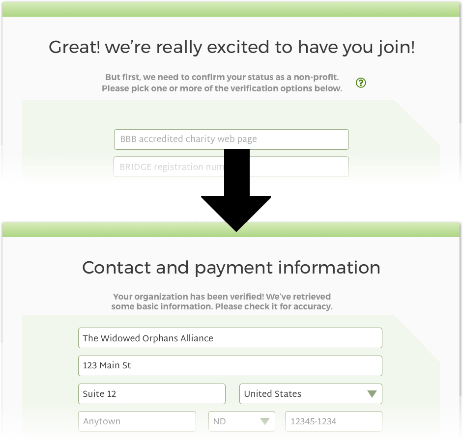
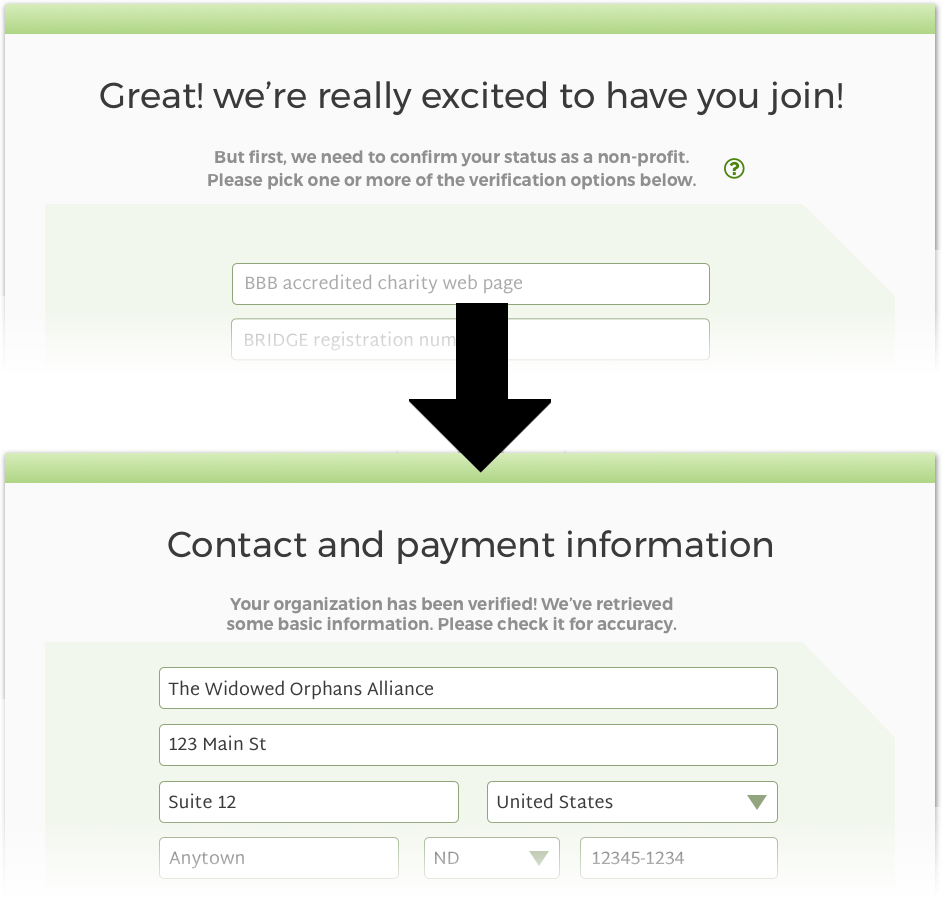
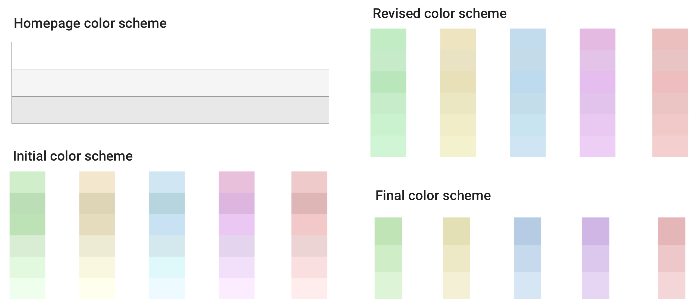

-
My development and design blog.
-

Josh Christofferson UX / UI FrontendBased out of
Denver, Colorado -
 A case study in desktop crowdfunding design.
A case study in desktop crowdfunding design.-
Helping Handsa case study

-
-
The description for this project was broad. I decided the first step should answer two questions:
- Is there a need out there that isn't being filled and could be by this project?What do crowdfunding donors actually want in a site?
- The Competition
There are a lot of crowdfunding websites already out there and many of them are quite good. I did a SWOT analysis of four big ones to see how to best shape this project’s major goals.
-
Strengths & Weaknesses Kickstarter
JustGiving
GoFundMe
GiveForward
Good Whitespace Clear Navigation Adv. Searching Clear CTA Trust Validation Fund Breakdowns External Links Comments The strengths and weaknesses clearly showed two major things I could use to really define this project:
- None of the sites give a really solid explanation of why groups need the amount they're requesting.None of the sites help me know whether or not the group I'm donating to has any kind of accountability.
OpportunitiesImpulse purchases and leverage of social media present a huge, mostly untapped avenue for crowdfunding. Were this a mobile project, I'd put huge effort into quick $1 random donations.Focusing on established charities and foundations rather than individuals would set this project apart and provide the missing validation.ThreatsThe market is fairly saturated with crowdfunding, so major effort would have to be put into marketing and drawing in donors.The transparency that would be aimed for in this project might also be impractical or even unatainable for some charities. Nevertheless, charities could disclose as much as possible or at least explain why they can't divulge such information. - User Personas & Stories
With two major goals nailed down, I turned to user personas and stories to get a sense for how to best go about fulfilling these needs.
A summary of what was found:
Charity Owners
- Motivations: Owners want to be able to reach larger audiences with little fuss and little need for specific training.Frustrations: Most onboarding processes take too long and have too much upkeep.
Potential Donors
- Motivations: Donors want to find a charity that suits them and quickly assess if they're worth the money.Frustrations: Looking up how valid a charity is usually relies on outside searching and can be frustrating and fruitless.

-
-
Armed with a clear view of a gap in the market and what users want, I put together a clearly defined features list for this project.
As a charity owner I want to... create an account. display progress on reaching my monthly and annual goals. view a list of people who donated and how much they gave. monitor comments on my fundraiser page. As a donor, I want to... sign up for an account. browse local charities that I can donte to. donate to a charity. track my donations. understand where my donation money is going. know I can trust the charity I'm giving to. -
- A Name
It was finally time for a name and brand. Given the focus on trust and charities, I wanted the name to evoke the same feelings as trusted charities like Habitat for Humanity or the Make a Wish Foundation, but more broad since this would be an aggregate site, not a specific charity.
-
Charity Match
Charity Hub
OneWorld
Charity Trust
VeriCharity
Outstretched Hands
HelpNow
Helping Hands
Helping hands perfectly captured what I was looking for. The name gives a good sense of altruism and is short and memorable.
I love color theory. Green was the obvious choice for Helping Hands for two reasons:
- Green evokes money, health, and wellbeing; all things that fit with Helping Hands.Most of the competitors use green. People are comfortable when similar things look similar.
I decided to accent this with a slight off-white. White evokes cleanliness and purity. I also considered blue as it conveys solidity and trust, but decided to keep the branding relatively monochromatic for simplicity and logo application.
The logo was key in creating the brand for Helping Hands. The final design was chosen to resemble two hands reaching for each other, the whitespace between forming the distinctive “H”. This design is simple, works well in black and white as well as color, and is identifiable at both large and small scales.
The primary font for the site was chosen to be Montserrat. This sans-serif font is easily legible and closely resembles some of the default fonts, but is just different enough to stand out and give the site some personal flavor. It works particularly well for both titles and body text given its versatility in font weights and styles. Given this last point, I decided to not accent with a secondary font.

-
The layout and flow of Helping Hands was a crucial stage in development. Nothing drives away traffic faster than confusing, frustrating, or boring site design.
Particular emphasis was given to the onboarding process to make it as streamlined and efficient as possible. I used my knowledge of frontend programming and decided that a large amount of information could be gained by automatic processes rather than having the user input everything. This is especially true for charity owner accounts as a large amount of needed information must be made publicly available.
Attention was also given to make the donation process itself clear and straightforward. Inspiration for this was taken from sites like Amazon, which use only a few simple prompts before the user can pay.
I also conducted a user survey at this point to explore how to best handle a comments section for each charity.
- If you give to charities, why do you give?I give because it feels good to help others.I give out of a sense that I should be doing so.I give because I have a personal or family connection to the cause they support.Not sure. Sometimes something just catches my eye or interest.If the charity has a track record of putting the donation to good use.Because there is a need.When you give to charities, would you want recognition for your donation?Yes, one visible only to the charity I'm donating to.Yes, a publicly visible one that everyone could see.No.Sometimes.
Pros:
- Donor messages could help charities seem more personable.Charity owners can be bolstered by positive messages from the communities they serve.Donors can feel a greater sense of security that the organization they're donating to is legitimate.
Cons:
- Comment sections can quickly devolve into flamewars and junk advertising.People remember negative experiences more than positive ones and this could do more harm than good.Comment Section may be too high maintenance for some organizations to want to handle.
 
 -
Hand-created sketches and Balsamiq were used to explore a large number of low-fidelity layout ideas before moving to high fidelity mockups. Layouts were designed to give hierarchical prominence to things like the donate button and to highlight the current donation goals. Ideally, users could view the page and find the most important information with a quick glance.
I created the high fidelity mockups at the same time as a style guide. While things like buttons and banners are definitely part of branding, I wanted that and layout to shape each other rather than forcing one to fit the other.
I paid special attention to editing information for charity owners. I decided that less tech-savvy users should be able to see exactly what their changes and additions would look like right as they were adding them. I didn’t want frustration over things moving or changing from what the creator thought it would be. Pinpointing layout to allow for this behavior took considerable planning. In the image below, note how the editing tools don't displace the white content box.
User feedback also came into play for this stage as well. 5 second tests were administered to determine the logical layout and placement for buttons and key pieces of information. The “donate” button in particular moved around several times during development until it was both easy to find and clear what was being donated to.


-
The Deliverable"a job well done"
The final deliverable is a full scale interactive mockup using InVision.

-
Reflection/Growth"to infinity and beyond"
Even though the project requirement was for a desktop site, I felt that a mobile design for helping hands would have had greater impact. I created a quick mockup of a charity page in mobile to show how to this could work. I also wanted to explore how impulse “one-click” purchases could be worked into the site as its a huge avenue for revenue.
I personally learned two major lessons from this project:
- The extreme value in creating a cohesive style guide along with the branding very early in the design process. I could have saved a lot of time from tweaking and re-tweaking elements repeatedly.The value of nailing down that complete listing of user stories and MVP very early in the project. There were numerous times I wanted to add features that sounded good, but kept myself grounded in the MVP, sticking to what I knew was important.
 InVision
InVision GitHub
GitHub-
Cornucopiaa case study
-
Cornucopia is a shopping list app. Its purpose is to fill in several gaps in the market - namely ease of use in the form of automatic coupons and connection to store API's for item locations.
The underlying principle for Cornucopia is one of technology. Current shopping list apps on the market aren’t bad, but don’t make full use of the technology available to modern smartphones. An app of this type should provide the user with unique functionality.
-
-
The start to my research was in personal dissatisfaction. Part of why I created this project was because I haven't been able to find a grocery shopping list app I was satisfied with. I wanted to see if others echoed these thoughts so I ran a survey. I saw some striking results:
-
75%of respondents shop for groceries once a week or more.85%of respondents create a list beforehand.5%of respondents use an app specifically designed for shopping lists.
 75%of respondents are interested in an app with the right features.
75%of respondents are interested in an app with the right features. At the end of the survey, users were asked what features they would most use. Four of these features were chosen by over 50% of the respondents:
- The ability to add or remove items quickly.
- The ability to locate items within a store.
- The ability to view coupons connected to added items.
- The ability to save lists of frequently used items.
- The Competition
People are obviously interested in a grocery shopping list app but aren't finding what they're looking for. I wanted to run a SWOT analysis on the competition to see what users are being presented with and why these options aren't good enough.
-
Strengths & Weaknesses: Out of Milk
Our Groceries Shopping List
Grocery Shopping List - Listonic
Grocery IQ
Multiple lists Check and uncheck To do list List has categories Manual prices Automatic prices Barcode or voice entry Photo support Store locations Automatic finding of items in store List by recipe Syncing or multi-user Item autocomplete Coupon support Many of the competitors also have some basic design flaws that violate Material Design. This includes buttons and fields at smaller resolutions than are recommended and buttons repeated needlessly next to every item.
OpportunitiesWhile a lot of the competitors have apps with tons of features, the problem could be that they have too many features. My survey results back up the idea that users aren't interested in most of them.A shopping list that focuses on quality development of just a few features could easily be more useful to the public.ThreatsThe market for these kinds of apps is fairly saturated. If Cornucopia is going to succeed, it needs to really stand out on the quality of its limited number of features.The lack of device syncing multiple users may shrink the user base. - User Personas & Stories
After talking to a number of individuals, I created some user personas that focused on real shoppers with real needs. These are people who aren't necessarily technologically minded and who are looking for something that will genuinely make life easier.
| As a shopper I want to... |
|---|
| quickly mark off or unmark items. |
| categorize and sort my items both in custom formats and auto-sorted by aisles. |
| have the app find prices for me automatically. |
| have the app find and apply coupons for me automatically. |
| have the app notify me of related items. |
| have the app tell me where the nearest stores are. |
Much of the flow for Cornucopia was driven by the user personas. The app needed to be relatively childproof for the harangued parent. A child being able to grab the phone and easily, accidentally erase items or the whole list would be disastrous. I wanted to make sure that the app included user error failsafes to prevent these kinds of problems while at the same time not being cumbersome to use.
The personas also helped give emphasis to the idea that the main screens really only needed minimal information. After first time use, most users would know their regular items and not need to see things like images or coupon details regularly. Most of this additional information could be relegated to a secondary screen.
At this point, I was just about ready for a first round of user testing. 5 flows were designed for the initial user tests. Each of these flows tested one of the major functions of the app.
Mockups for this project started with simple hand-drawn sketches, progressing quickly to low fidelity wireframes in balsamiq. The first iteration of designs focused on having most actions occur at the bottom of the screen in the snackbar. The buttons were context sensitive and would change depending on what the user had selected. To do any major action, users had to first click the item or category, then click the context button. I was hoping that the two-stage selection process for most items would handle the user error problems presented by children grabbing for the phone.
I conducted some usability tests with a prototype and quickly found that while functional and aligned to Material guidelines, this layout wasn’t as intuitive or smooth as I would have liked. I went back to the drawing board, creating several alternate ideas as well as drawing upon the competition a bit more. I settled on a design involving swiping to perform major actions. A second round of testing with a low fidelity prototype found that this was far more intuitive and addressed concerns users had with the first iteration.
- A Name
A good name was especially important for this project as there was opportunity here for a lot of free marketing through word-of-mouth. I created a list of relevant terms like “list” “shopping” “easy”, “helper”, etc and started combining them in as many ways as possible to try and get something good. I wasn’t satisfied with these results so I turned to a thesaurus for some alternate ideas. I quickly stumbled upon “cornucopia” and instantly knew I had my name.
The legendary horn of plenty isn't something that requires the holder to work hard. Bounty spills out of it of its own accord. The app was intended to do the same. It looks up prices for you. It finds coupons for you. All you have to do is type in a name and match it to an item. The name additionally carries a sense of sophistication and value.
- The Logo
This was a strong enough name that I decided to focus logo development on the word rather than a simple symbol. I wanted to incorporate some kind of imagery into the word, though. I tested a number of different food items for letters, but it didn’t take long for me to settle on the sheaf of wheat for the letter “i”. I conducted some surveys involving font choices and finally settled on “worstveld sling extra oblique”. There was just enough flair in the font to give the right touch of sophistication and the font is legible even at fairly small sizes.
Creating the android system icon took a little extra work. The word logo was definitely too long to use here, so I needed to go back to the idea of a simple symbol. I took a very simple stylized wheat head and wrapped it in rings of the branding colors. This simple design stands out well, looks fairly unique, and still fits in line with Cornucopia’s branding.
- Colors
My original color scheme was simple browns and yellows with a touch of blue for accent. User testing revealed that more people liked blue as the stronger color with tints of yellow as the secondary. I went with this and chose strong primary colors in line with the Material guidelines. I did have to modify the lighter blue to be one shade lighter than standard to imorove color contrast for the black text. This was a minor change but demonstrated the importance of bending the guidelines slightly for the sake of accessibility.
The current product is a semi-functional mockup of the main app screens constructed with HTML, CSS, and several Javascript libraries.
The strong foundation this project had in research was very bolstering. There were few questions as to what features to include or what direction to take.
Were I able to do this project again, I would have included a stage with a pencil and paper prototype. One problem I encountered was that none of the existing prototyping tools were really sufficient in reasonable time. I had to carefully weigh just how many screens to create to be able to build the prototype in reasonable time yet still be sure everything crucial was tested. A pen and paper prototype would have, I think, been the most effective balance between these two elements.
As for the future, I would like for this to eventually be a real app hosted through Google Play. I have the programming skills to make such a thing a reality and would love to be able to get more experience with ongoing design of live products. This should also give me more experience with API integration.
-
Airport Navigatora case study
-
Contents
-
-
-
-
-
-
-
-
-
The Portfolioa case study
-
This is a case study that details my journey in designing this portfolio.
The end goal of the portfolio was threefold:
- Show what I can do in both coding and design.Have the site itself exemplify the above point.Stand out from the crowd with something a little different.
-
-
I started with a blank slate. I knew what I liked when I saw it, but defining what I liked was a much harder task. I began by simply looking through dozens of portfolios and earmarking ones I liked and why.
What I like:
- The lack of symmetryThe subtle but definite use of Grid on the top halfThe flow for where the eye is drawn
What I don't like so much:
- The contrast between the hero and grid images on the bottom half
What I like:
- The awesome creativity of the designThe fading and blurring of the background imageThe sense coming across that you're dealing with an individual here
What I don't like so much:
- The fact that the site uses the same vertically scrolling template found on so many other sites
As can be seen, I was pulled by CSS grid. Straight lines and neatly partitioned information appealed to me, likely due to my background in science. But I was also drawn to the interesting and quirky. Sites like Denise Chandler's drew me in because they fed me unique visuals. I wanted to be able to incorporate something like this.
Research also showed a widespread use of small animations or snippets of video. I was surprised by how much punch could be given by such a small addition.
The idea of adding animation to my site was one of the major things I felt really set websites apart from print media. Whatever I ended up doing with my portfolio website, I knew I wanted it to involve some animations in a major capacity.

-
As a visitor I want to... view samples of Josh's work. contact Josh easily. immediately see what makes Josh stand out. see Josh's creative process. be able to clearly tell what everything does. be able to tell that Josh knows frontend coding in addition to design. -
Creating a unifying brand to represent myself was particularly difficult. I wanted to integrate 3 fairly nebulous ideas into one:
- Get across a sense of me being an ordered and structured person.Strongly convey that I'm an individual, not a design firm.Express a creative and unique design.
My brand evolved radically as I progressed with the design, responding to my growing understanding and skill with design principles.
My earliest branding designs revolved around a grid-structured site paired with a fluid signature. The meeting ground for the two was in wireframe icons that could be created with a single unbroken line. These were also easy to animate. While the majority of these ended up not being part of the site, I was still pretty happy with them.
My typeface choice echoed this idea. Exo 2 is a font that has simple clean lines that run towards being angular. (See lowercase "a" and "n".) I was happy with this choice and for a while it was the only typeface on the site.
Colors were also well defined right from the start. I wanted the site itself to be very muted against vivid case studies and other features. I felt that this would keep case studies from clashing with the portfolio itself and from clashing with each other. The site itself would simply act as a palette cleanser in this regard.
The landing page for the site underwent radical changes as I tried to move things from simply functional to aesthetically pleasing.
The case studies also underwent radical change. At first, the case studies were massively influenced by CSS Grid. I broke away from this design when I realized I was working for the grid and not the other way around. I restructured the case studies so that the grid-and-box theme was more a subtle accent to things rather than a driving force.
I did keep most of this idea with my "about me" page, however, as it played much better to what I wanted to accomplish there.
Near the end of development, I added in the Titillium Web typeface in a very heavy weight to accent the thin lines of Exo 2. I was particularly pleased with the contrast between the two.
 -
I focused my information architecture on two main things:
- The site should be very intuitive. As great as it is to make things look cool, that's worthless if it obscures function.
- I wanted almost all information to be available with as few clicks as possible. I didn't want anyone to have to deal with nested hierarchies of pages.
I also made a concerted effort to have the site cater to accessibility needs. The site is designed so that nearly all the information is structured in one large XML-style nested hierarchy. This makes it easier for screen-readers to skip whole sections.
The structure of the website was also important for another reason. I built a fair amount of custom Javascript and jQuery for the site. The architecture fits beautifully with the way jQuery functions, making a lot of the coding much easier than it otherwise would have been.
-
Sketches, Low-fi, and high-fi mockups were intensely crucial to the development of this site. Given the prominence of animated elements, many ideas needed to be actually implemented to see how well they really fit. This made development slow but allowed me to explore wide ranges of related designs.
Mockups also aided in some of the coding and CSS, especially when it came to the placement of Grid elements.
Simple Hi-Fi mockups also helped with text placement and determining available spaces for content. This is due to the fact that nearly all of the elements in the site scale as percentages rather than set pixel or point values.
-
The Deliverable"a job well done"
-
Building this site has been a massive learning experience. While I enjoy the somewhat unique Grid-based site I've created, I would like to create something a bit more traditional at some point.
I'd like to create a space on my portfolio for exploring and tinkering around with ideas - a playground. This would keep me motivated to continually try new ideas and expand my comfort zone.
I also want to look into rearranging the stylesheets to be a bit more user friendly. I plan on coming up with my own organizational schema that I can use as a template for future projects.
-

-
The Vale of ChildhoodQuest: reach adulthoodSkills honed:
- Integrity
- Strong work ethic
- Critical thinking
- Playing and creating games of all kinds
- Love of B movies
The Forest of CollegeQuest: BA in Astrophysics
MA in Secondary Sci EdSkills honed:- Data analysis
- Proper testing procedure
The Mountains of LASPQuest: Programmer / scientist / webmasterSkills honed:- Programming: IDL, js, HTML, PHP
- Large scale data manipulation
- Web design
The Swamp of Fort Lupton SchoolsQuest: HS science teacherSkills honed:- Immunity to deadlines
- Cross-department collaboration
- Feedback and refactoring proficiency
Wed TownSide QuestWife joins!The Town of LiteratureQuest: Write & publish a bookSkills honed:- Large-scale project management
- Breaking projects into workable steps
The Hills of BelleviewQuest: HS science / calculus teacherSkills honed:- Team player mastery
- Presentation skills mastery
BabyvilleSide QuestDaughter joins!The Lakes of WyzantQuest: Independent tutorSkills honed:- Interpersonal communication
- Efffective and adaptive strategy
KidtownSide QuestDaughter joins!The Plains of TerraXMLQuest: Software engineering contractorSkills honed:- Programming: Java, Xquery, Jquery, C#
- JIRA workflow
The Desert of HSSQuest: Security officerSkills honed:- Adaptability and quick learning
- Attention to detail and protocol
The Unknown FutureQuest: Unknown!Possibly useful skills:
- Unity3D (4 min demo)
- Designer Track through Bloc. Experience with:
- InVision, Balsamiq, Sketch, and Photoshop (sample)
Here's a bit of mine.